In May 2018 I entered the Young Persons’ World Lecture Competition, hosted by The Institute of Materials, Minerals and Mining (IOM3) and sponsored by CBMM. This competition sent me on an amazing trip to South Africa to compete against finalists from all over the world, focused on the ability to deliver technical content. I have always wanted to improve my public speaking and this gave me the motivation to put in the work to get better. I have been attending Rostrum's public speaking classes every Friday since April, which made winning the competition one of my proudest achievements. I have written this blog to share everything I have learnt about conveying technical topics and public speaking in general. Let's dive into it.
Contents
Part 2: Presentation Dissection
Pre Competition
It was a Wednesday afternoon, I was checking my university emails, the constant reminder that I am yet to finish writing up my PhD thesis, when something caught my eye.
“The Young Persons’ World Lecture Competition, Win a trip to South Africa”
😏
“Deliver a technical topic in the fields of Materials, Minerals and Mining”
😕
Well, my PhD research unfortunately fell outside of these fields, but since I was captivated by the luxurious prize, I read on.
“The competition is based on your ability to present and convey technical content, not the technical content itself”
🤔😏
My neurons were starting to fire. I liked presenting, and I didn’t think I was that bad at it either, and hey, if it isn’t based on the technical content itself, who cares if my PhD isn’t in the field, right? I continued to read.
“The Australian National heat is held on Friday the 25/05/2018”
😕😕
This was two days away. I sat back and pondered. Two days was… troublesome to say the least. However, I had one thing going for me - I didn't have anything to lose. So I sent in my application, apologising for the lateness of my entry. The organiser replied quickly - stating I would be the final speaker of the night.
It was happening.
On the drive home from work, I had another problem to solve, what the hell was I going to talk about? Here is what I knew, most likely the average competitor would be masters or PhD students who were actually conducting research in the field. So, I probably could not win by the merit of my presentation's content. I started to get desperate as I thought of possible parlour tricks and cheap entertainment tactics I could use.
But then I had a brainwave.
In 2017 I competed in the Unearthed hackathon. ‘How can sound be used more effectively in the resource industry’. This fit under the umbrella of mining, and it was related to my PhD research, which is in submarine acoustics. It was perfect... well it was the best shot I had.
During the hackathon, we addressed the challenge by combining beam forming technology (to extract individual sound sources from noisy environments), signal processing and predictive modelling for the classification of equipment health purely by its sound signature. We tested our solution framework using sounds from Woodside’s fans, for which we had recordings of healthy fans and those with corroded bearings. 1
So I started throwing together slides, explaining the hackathon, the problem, our solution and all the technical concepts involved. But I needed more, it wasn’t enough. I was currently working on an account at Rio Tinto, developing a natural language processor machine learning model to read and annotate site workers shift logs. I decided to ask some of the Rio Tinto engineers if they knew of any applications of using acoustics on site for condition monitoring. One of the Rio Tinto engineers, gave me the perfect answer.
RailBam.
What RailBam does, is it used beam forming, signal processing and predictive modelling (sounds familiar right?) to monitor the acoustic emissions of each wheel of railway vehicles passing at line speed. 2
I had mixed emotions about this discovery. The first, was immediate excitation to how perfectly this tied into my presentation. The second, was anger, fuelled by the memory of our pitch in the hackathon. The pitch where we showcased the general solution framework and discussed possible applications, without a detailed example of previous successes.
But anyway, that was done, and this competition was not. So I stayed up to 1 am on the Thursday night, or Friday morning if you want to be pedantic, and finally finished putting together a presentation I was happy with.
It was competition day. I practiced over lunch whilst I ate one of the 50 sausage rolls I had made the week prior.1 I ran through my presentation with both my IBM colleague and my Rio Tinto client, individually. I find that running presentations individually widens the line of communication from the listener, which leads to more valuable feedback. People are generally more open and willing to give feedback and criticism in privacy rather than in a group. On my end, I find that I am also more receptive. Beyond that, the obvious advantage is that it also allows you to incorporate the first set of feedback before presenting to your next audience. That being said - I would also say it is very important to take feedback for what it is, optional. Not all feedback is absolute, and it is up to you to listen to the feedback, judge it impartially, and then decide the action to take. One thing I have learnt in gaining feedback for my presentations, is that everyone has their own ideas and preferences for what makes a good presentation, including myself as you are reading this blog. When you try to incorporate all or too much feedback, you may lose your personal identity. To me, a strong sense of personal identity is the most critical part of a presentation. Your personality needs to shine through. You need to be genuine. It is a well known psychological fact that we feel more connected with those who are genuine. This also applies to presenting. In order to establish a real, positive connection with your audience, you need to be genuine. So, seek feedback, but remember, it is up to you to choose how you use it. Now, back to the story.
It was 4:30 PM, I was due to start at 5. I left the office in a hurry. As I stepped into my car, I heard a loud rip. I looked down to see that my pants had ripped from my crutch all the way to the back of my bum. I slowly rested my head on the steering wheel. This was a bad omen.
"What were you thinking Kyle? That you were just going to roll out of bed, win a competition and have your dream holiday in South Africa? Things dont work that way. This just was not meant to be. It was a nice fairy tale, but its time to come back to reality."
This continued for about half the drive. Eventually I snapped myself out of it.
"Okay that's enough of that. You’ve come this far, you’re not going to let a rip in your pants derail this whole operation Kyle." 2
I arrived at the venue, just as the previous speaker wrapped up their presentation. I was barely seated for 2 minutes before the chair began to introduce me.
Now, There are a three things I like to do before I present.
The first - which I am not entirely sure really works for me after doing the world's biggest bungee jump but I still do it anyway - is I tell myself that I am excited. 3 Telling yourself that you are excited is a common psychological ploy. A study by the American Psychological Association states that when people tell themselves to get excited, they perform better than they do when they tell themselves to calm down. "When people feel anxious and try to calm down, they are thinking of all the things that could go badly. When they're excited, they're thinking of all the things that could go well".
The second, is that force myself to smile. It is also well known that certain actions by the body send messages to receptors in your brain. By smiling, you trick your brain that you are happy, and in turn, you feel happier. I find that this one actually works for me.
The third, is that I take a few deep breathes (while still smiling) right before I take the stage. Doing this, relaxes me and makes sure I start off my presentation without rushing.
I was up.
For my confidence during a presentation, I find that the first 30 seconds of a speech are the most critical. If the first 30 seconds go well, I completely relax into the presentation and flow naturally. If the first 30 seconds do not go well, I find myself starting to panic and then I overthink things. I therefore ensure that I know the first 30 seconds of my presentation down to a tee. This is the only part of the presentation that I 'rote learn'. I find this starts me off on a positive note, and then the rest comes naturally. Perhaps this is a weakness of mine that I need to work on, and that a better presenter may be able to recover better than I do from a bad start. One thing I know is that, this 30 second philosophy of mine became very obvious to me in performing stand-up. When the audience laughed at my opening joke, I went on a roll. When the first joke fell flat, I found it tough to recover for the rest of my set. Anyway - it is something I am working on, but for me currently, I put a lot of effort into making sure the first 30 seconds go perfectly.
Now, I am going to breakdown and dissect my entire presentation, giving insights and analysis into the details of the presentation and the effects that they have on the audience.
Presentation Dissection
Slide No. 1
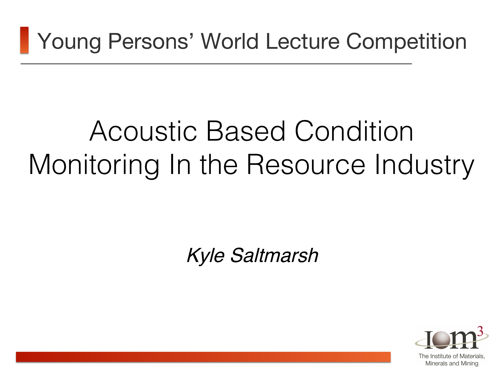I find that starting off your presentation with an attention grabber is also very important, it can be a story, it can be a question to the audience, an interesting or confronting fact. It does not matter, as long as it is not the usual dull introduction of the title of your presentation. An article published by TIME magazine in 2015 quoted research from Microsoft implying that humans now have an attention span of just 8 seconds – which is allegedly less than that of a goldfish. What this means is that if you do not capture the attention of your audience at the very start of your presentation, you may lose them entirely.
I started my presentation off with a small story.
"On a mine site, a technician can simply be walking past a piece of equipment and stop dead in his tracks, because they know that something doesn't sound quite right. Just from the sound signature alone… the technician has determined that this piece of equipment may be faulty - and if they are good - they could probably tell you exactly what is wrong with it. This is the essence of acoustic based condition monitoring which is the topic of my presentation today."
The story does not even have to be an amazing story - as you can tell - to still be interesting. At the end of the story I introduce my topic, but the audience now already has a good feel for the direction I will be taking them in.
Slide No. 2
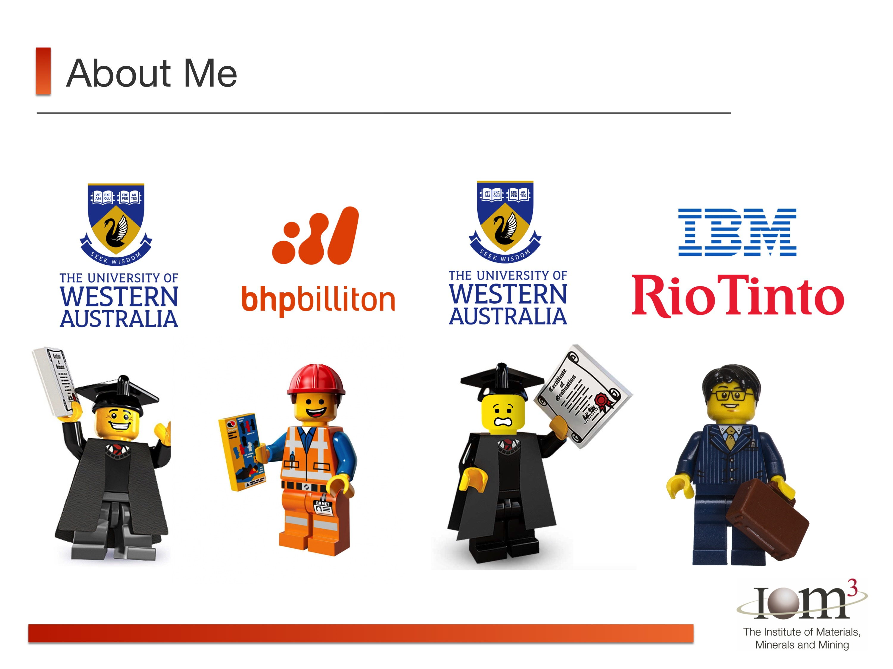The next step of my presentation was about me. I am a big fan of having an about me section in your presentation. It humanises you. Depending on what is appropriate for the presentation, I give the audience different details about myself. For this presentation, I focused on my education, my previous work experience and my current role.
"I am from Perth, Australia - fun fact, Perth is the most isolated city in the world. I studied mechanical engineering, physics and applied mathematics at the University of Western Australia. I then worked at BHP Billiton, where I thought I would fulfill an illustrious career as a mechanical engineer. I was there for less than year however, because I realised that my true passion was solving technical problems. So I decided to go back to uni to do my PhD in submarine acoustics for the Australian Navy. Now, you can see that I am a little less happy the second time around and that is because I am still writing my thesis. But I have entered the professional world again, working as a Data Scientist for IBM, contracted to Rio Tinto Iron Ore."
There are three things to note here.
The first, is that I have used a Lego theme in my presentation. This may seem childish, but there was a reason for it. The tone I chose set for my entire presentation was fun and light hearted, as I think learning should be. Besides, Everybody likes Lego.
The second, is that I usually find speaking about my education and work experience quite dry. Sometimes, it might even be perceived as arrogant. Boasting about your intelligence separates yourself from your audience, which is the opposite effect that should be desired. But for a technical presentation, I felt it was necessary to show that I am credible to lecture on this topic. The combination of my engineering degree and work experience at BHP Billiton qualify me to the audience to present on a mining related topic. My PhD in acoustics qualifies me to talk about the use of sound on mine sites. My current role as a Data Scientist for IBM, but contracted to Rio Tinto, qualifies me to talk about the application of technology in the mining industry.
The third, is the use humour. I love using humour in my presentations and I like to do it early. This works to do two extremely important things. 1) disarm and relax the audience 2) disarm and relax myself. The about me section of a presentation is the perfect time to use humour, as I think it is important to adopt a more serious and professional persona for the meat of the presentation. You do not want to be joking around too much whilst you are trying to explain the technical content, this will reduce your credibility in the eyes of the audience. Humour has to be used naturally and you have to understand your audience. Notice the frowning face that I edited onto the Lego man that represents the PhD phase of my education. I knew - from stalking the judging panel on LinkedIn - that many of them held PhDs, or at least did postgraduate study. This meant that they will too understand the pain of working in research. They will relate, and are likely to enjoy the humour, and they did.
Slide No. 3
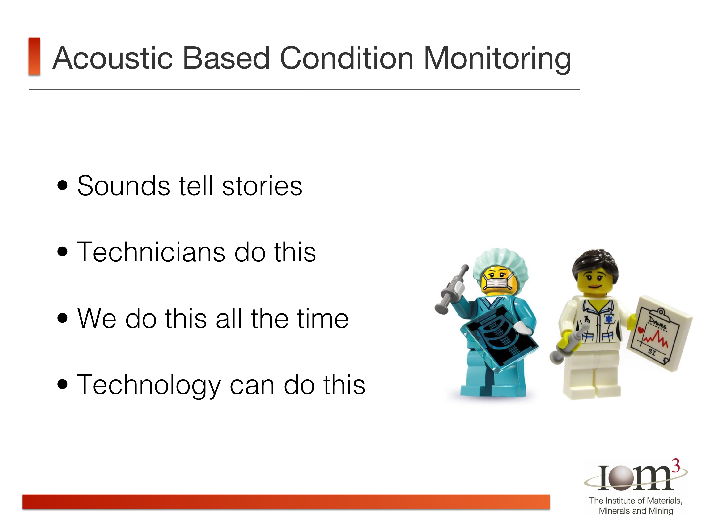The next part of my presentation was explaining what exactly I was going to be talking about. I find the audience is settled in by this point and ready to listen, but you do not want to scare them off. You have to start off easy to hook them in. I used this slide to do a two things. Explain what acoustic condition monitoring actually is and to further define the scope of the presentation.
"My favourite saying is that sounds tell stories. Now we have already talked about the example about the on site technician who can simply listen to the equipment sounds and know if there is a problem, but we actually do this all the time as well. Who here has ever booked their car in for a service when it started making funny noises? That is also an example acoustic based condition monitoring. We do this all the time, with our computers, our refrigerators… even our partners. We know by the way something sounds, whether there is a problem. But technology can also do this, and that is what I really want to focus on today."
Again, the theme is light, there is some humour, it is relatable. The audience has a good feel for what acoustic based condition monitoring is and they now know the focus will be on using technology to perform it. Also note the use of 'we' and 'our' - I am trying to build upon the connection with the audience.
Slide No. 4
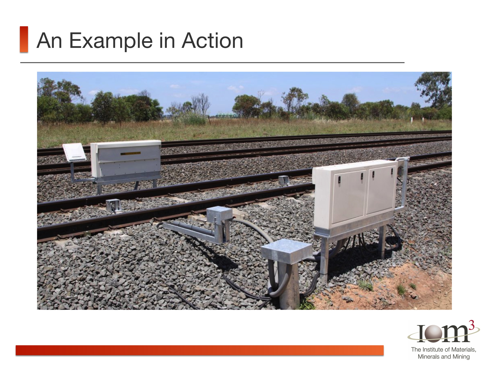I then go straight to a real world application, the application of RailBam at Rio Tinto. I do this for two reasons. To give the audience an object to focus their attention on and to showcase the importance of the topic through a real world application. From working in corporate environments, I have learnt to focus my presentations on value. From my experience in academia, the focus is on technical content. I wanted to find a happy middle ground for this presentation. Yes, the competition was based on the ability to explain technical content, however people like to have a story to follow. They need to know why it is important. The audience needs a reason to want to understand the technical content.
"Now, I want to start with an example. Has anyone here heard of RailBam? So a few years ago, Rio Tinto installed RailBam along their railway line. What RailBam does is it monitors the condition of the bearings on the wheels of the wagons, just by the sound signature that they are emitting. So as the train drives past this juncture that you see here, these boxes use microphones to listen to the sounds of each of the bearings - as its moving at full speed by the way - to determine the health of each and every individual bearing. Then it logs the results."
I am deliberately hyping the impressiveness of technology. I deliver this, with genuine enthusiasm, which will be mirrored - either consciously or subconsciously - by the audience. Obviously if I was to deliver this with no enthusiasm, it would be unlikely the audience would find the technology very impressive at all.
"Now, Western Australia is the largest exporter of iron ore in the world and Rio Tinto owns the largest privately owned railway line in the world. This means that their trains can be over a two kilometers long. That is hundreds of wagons and thousands of bearings on a single train! Now, I actually have an audio clip of a train going by on the rail line. Now I know that some of you might not be bearing experts, but you know, we did just establish that we are all naturals at acoustic based condition monitoring, so I want you to just take a listen, and tell me what you hear."
Here I am saying yes I know that you may think you do not know much about bearings, but just give it a chance because you may be positively surprised. I am enticing the audience to believe that they have a genuine chance to achieve the task I am setting for them. This will likely spark their interest and make them listen more attentively, as they take on the challenge. We all like a good challenge. 4
"So, who could hear the faulty bearings? Its okay, me neither. Its just noise right? Now I must confess, I set you up then, I am sorry, but I had good intentions! I did it so I could show you just how impressive this technology really is."
When I ask the audience who heard the noise, I am revealing to them that they were not suppose to hear it at all. I then say .. its okay, me either. This is important, by grouping myself with the audience, we are in it together. This helps to further build upon the connection. This then segways to my next slide.
Slide No. 5
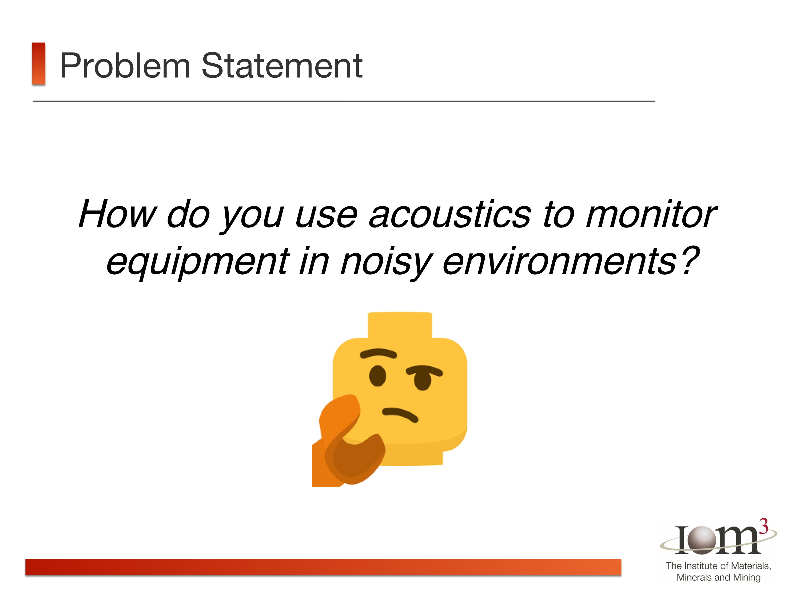"So the question I pose is, when you are in a noisy environment, which mine sites and plant environments usually are, how can we utilise acoustics effectively?"
I am further hyping the impressibility and building the curiosity, as well as narrowing down the problem statement to a single sentence.
"Well there are three main steps. Sound source isolation, signal processing and predictive modelling, and I am going to explain all of these steps to show you just how RailBam does it."
Finally, I address the problem directly. By this point, the audience wants me to explain. They are ready and they want to learn. By stating the number of steps, I am preparing to use the signposting technique to help maintain the audiences engagement through the technical content. By segmenting the solution into steps, the technical concepts can be explained in manageable blocks of information. This also gives the audience a reference point. They will now have a feel for how close they are to understanding the full picture. This reduces the risk of losing the audience by them not knowing how long the technical concepts might drag on for.
Slide No. 6
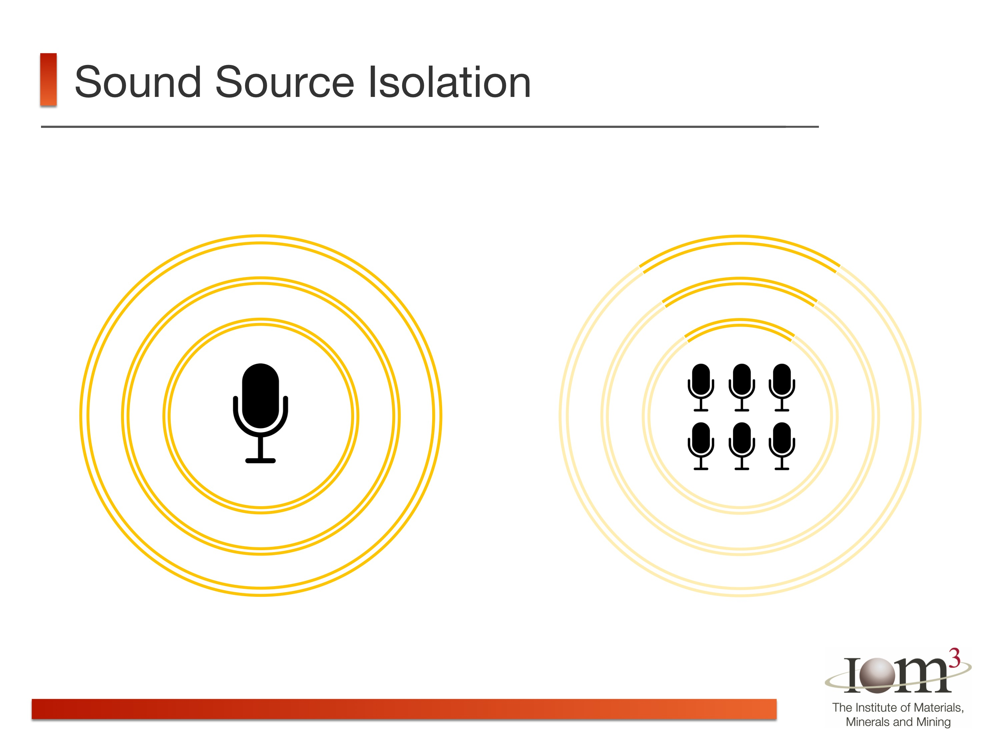"When you have a single microphone, as you see on the left, this is how sound is heard. You hear everything, which makes it impossible to filter out noise. But when you having an array of microphones, like you see on right, then it allows you to do something very special. It allows you to focus in - like an acoustical laser - in a specific direction. By applying phase differences between each of the microphones, you can sum the constructive and destructive interference to amplify the sound from the desired source. This technique is called beamforming and this is how sound sources can be isolated from noisy environments."
I have kept my slides simple. I explain the general concept of beamforming, but I do not get stuck into the weeds. Explaining the intricacies of beamforming offers no value to the overall presentation. It is important to pick your battles.
"Now beamforming is not new. We have been using it for years."
Segwaying into my next slide.
Slide No. 7
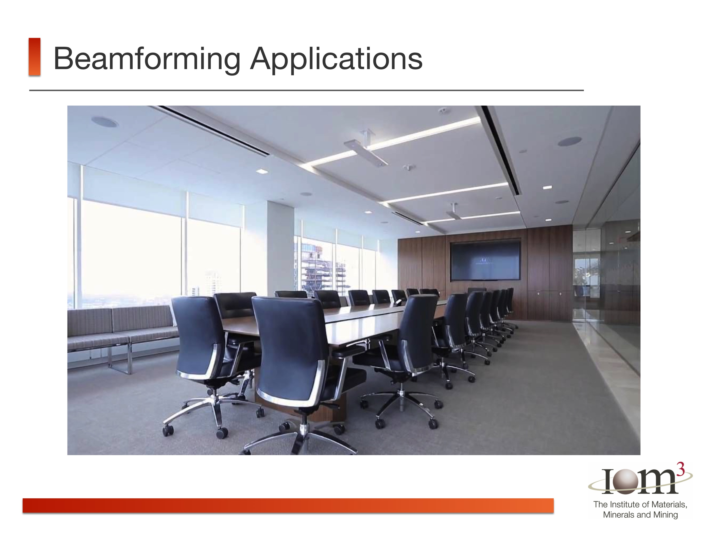"We actually use beamforming in meeting rooms. Here on the roof you can see there is two rectangular panels. Now inside these panels are arrays of microphones. So when somebody in the room is talking, the sound from their voice will be honed in on and isolated from the rest of the noise in the room and amplified."
Here I am providing an additional real world application to help solidify their understanding of beamforming.
Slide No. 8
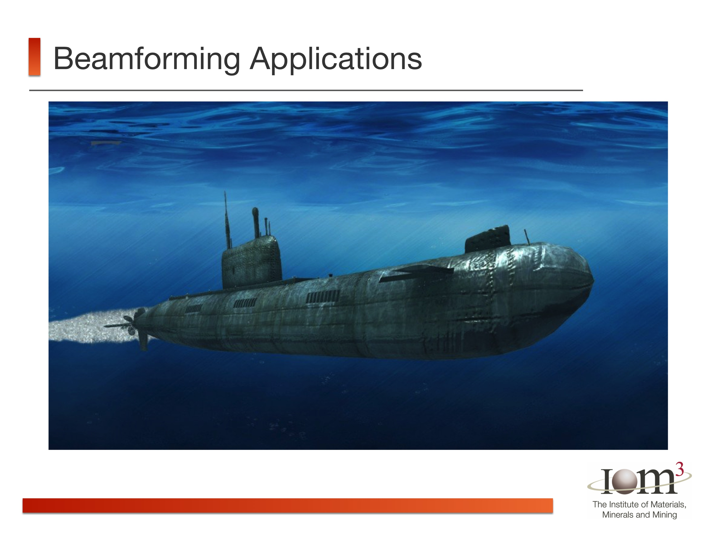"Submarines also use it to detect, communicate and navigate."
Relating it back to my PhD research, which I mentioned at the start of the presentation.
Slide No. 9
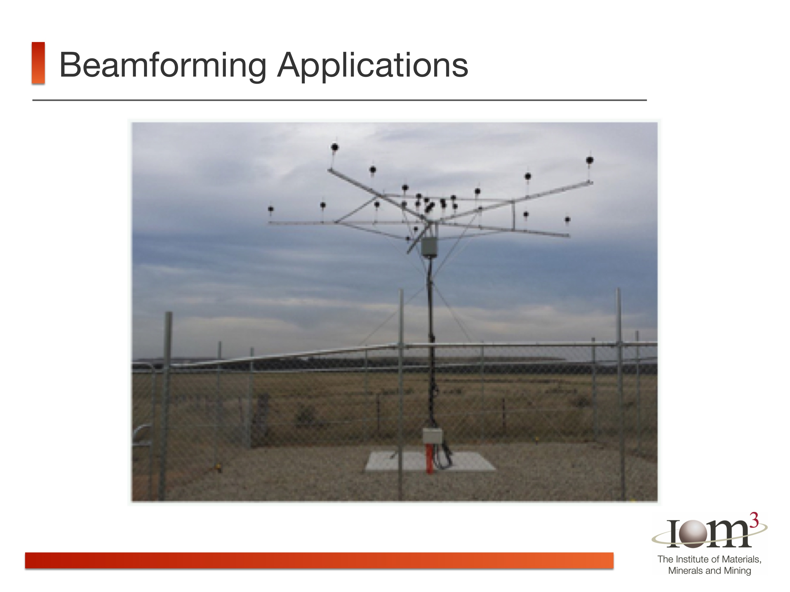"And it is actually by mining regulators to enforce noise curfews of mine site. Okay so we have covered the sound source isolation, lets move onto the next step, the signal processing."
Using a mining application, one they will likely be familiar with, as the final example of beamforming. I then explicitly state that we have finished going through the first step of the process. This is so the audience can place a mental check against the first concept, to mark it as done. I then continue signposting to lead them into the next module of information.
Slide No. 10
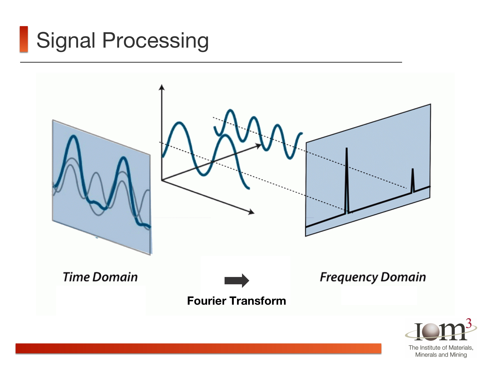"Our good old friend, the Fourier Transform. Now when we record our sound clip, we have a time series like you see on the left. Now what the time series really is, is the summation of all the frequencies present in the sound, which you can see in the middle. Now unfortunately, the sound clip is not very useful to us in the time domain. So we perform the Fourier transform, which takes us from the time domain to the frequency domain, which you can see on the right hand side."
I chose to open with the 'good old friend' line as the Fourier Transform is frequently encountered in most engineering and science degrees. It was therefore a safe bet that the audience would be familiar with it. These little touches really help to engage and show the power of understanding your audience while planning your presentation. I then sequentially step them through the diagram from left to right, directing their attention to the relevant parts of the slide.
"Now the analogy that I love to use to describe the Fourier transform is the Smoothie analogy. So if the time domain signal is our blended smoothie, then Fourier transform takes us to our ingredients list, to tell us how much we have of each frequency."
Analogies are always good, they help the audience understand a new concept by relating it to a concept that they already understand. I chose this particular analogy because it works and it fits into the light hearted feel of my presentation.
Slide No. 11
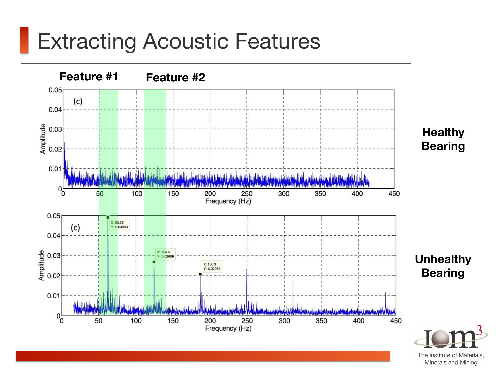"Now here we have the frequency domain response for our healthy bearing and our unhealthy bearing. What we want to do, is to determine the key differences between these two responses. You can see that it is very easy to see these differences. The unhealthy bearing shows spikes which are not present in the healthy bearing. This process is called extracting the acoustical features. We are looking for the features which allow us to distinguish the difference between the sound from a healthy bearing and the sound from an unhealthy bearing. So the frequency band from about 50 to 75 Hz is a perfect example of one of these acoustic features. Another feature, might be the range from about 115 to 140 Hz, and you keep going. Once you have got a bunch of these acoustic features, you feed them into a predictive model which is the final step of the process."
Here I used animations to show the acoustic features as I spoke about them. I generally avoid using animations as they can be distracting and unprofessional, but they can be useful to time when you want to direct the audiences attention to particular focal points. Again, I wrap up the module of information by informing the audience that we are about to start the final step.
Slide No. 12
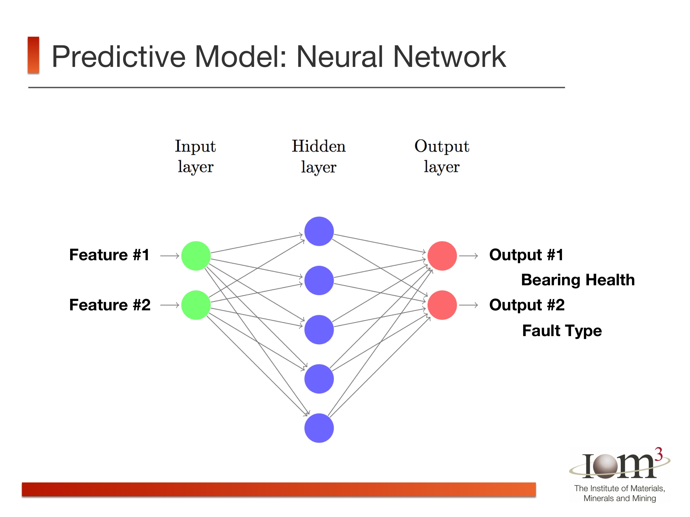"And one of the most common predictive model used is the neural network. Now, the neural network deserves a full lecture to itself, but for the purpose of this presentation, lets think of it as simply a model that finds non linear - as well as linear - relationships between a set of inputs and outputs. Now the inputs to the neural network would be the acoustic features that we just picked and the output would be the health of the bearing. But RailBam can go even further then that, it can actually tell you exactly what type of fault the bearing has suffered. Pretty amazing."
I use another animation on the second output of the Neural Network, which adds to the effect when I reveal how precise the technology is in its fault detection.
Slide No. 13
"So, returning back to the tracks. That is how RailBam uses sound isolation, signal processing and predictive modelling to monitor the health of every single bearing on every single wagon. And I think it is really important to realise that out of everything I just covered, none of it is new. This is not new technology, it is just a new application."
I repeat the slide of the railway line. I do this to close the loop. As the audience views this slide, they no longer feel curios and intrigued as they did the first time they saw it, they feel accomplished that they now understand the once illusive concepts.
"Now, I want to change gears."
Slide No. 14
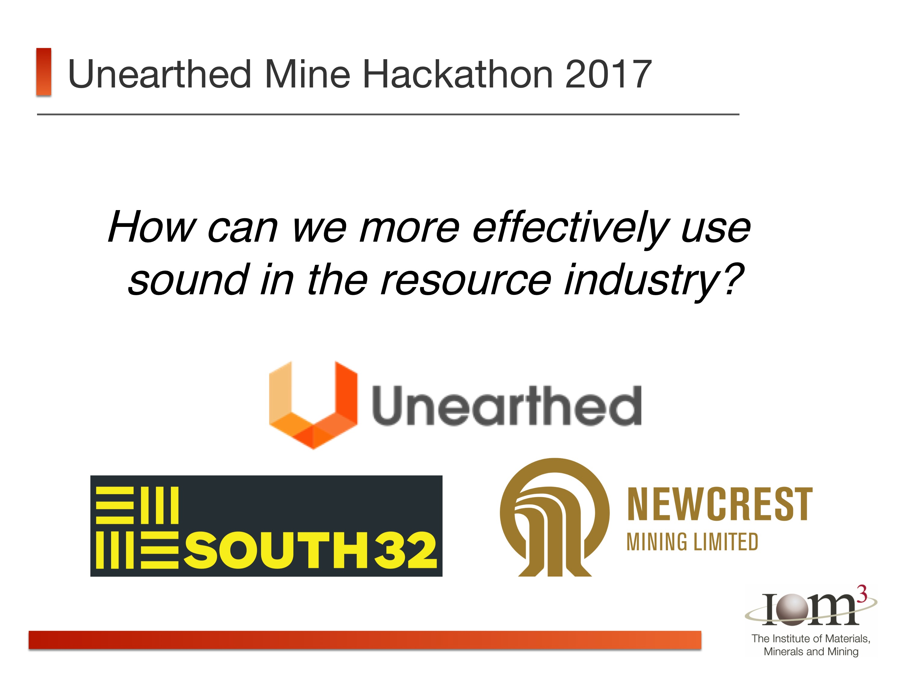"Now this might be going out on a limb, but who here has heard of a company called Unearthed? So Unearthed, is global now, but it actually started out of Perth, Western Australia. What Unearthed do is they go to mining and oil and gas companies and they say, give us some of your toughest problems, give us your data and we will put on an open competition, with prizes to solve these challenges. So there was one held last year, sponsored by south32 and Newcrest mining. And the challenge was, how we can we more effectively use sound in the resource industry? So I got a team together from my research group. Now, as a PhD students in acoustics, there is not much we can get excited about. This was our time to shine."
Not much to say here... pretty standard.
Slide No. 15
"So the first thing we did was, we approached a bunch of various mining and oil and gas companies, asking for audio clips from plant equipment. Woodside Energy - the largest Australian owned oil and gas company - provided us with sound recordings from their fin fans used to cool processes on site. Now, I have two sound clips, one for a healthy fan, and one for a fan with a corroded bearing. Now, I know that you some of you might not be experts in fans, but just take a listen, and tell me what you hear. This is the sound recording of a healthy fan." 2
"And this is the sound recording of a fan with a corroded bearing."
"I wasn't going to do it to you twice. You can hear the difference right??"
This is easily my favourite part of the presentation. By asking them to listen to the sound clips, framed in the exact same manner as before when I tricked them, the audience visually sighs and prepares themselves for another one of my ploys. This time however, they are pleasantly surprised as they can detect the difference. I purposely draw attention to this by saying 'I was not going to do it to you twice'. I am not that much of a tyrant. 5
"But the problem is, the sounds you just heard, were from single fans. Now you can see in the photo here, that there are rows and rows of these fans. So even though we can detect the difference in sound signatures, in such a noisy environment we probably wouldn’t be able to. Soo, you can probably see where this is going. So we actually proposed a solution that used the exact same three step process that RailBam uses. But I would like to add however, that this was before any of us had even heard of RailBam before. So what was the first thing that we did?"
The structure of my presentation uses reinforcement learning to ensure the understanding is solidified. By presenting the two similar applications, the first time the audience was learning the theory and the methods, the second time, they are truly understanding and applying what that have learnt thus far. Plus I am now sharing a personal example.
"Well the first step was, sound source isolation."
Slide No. 16
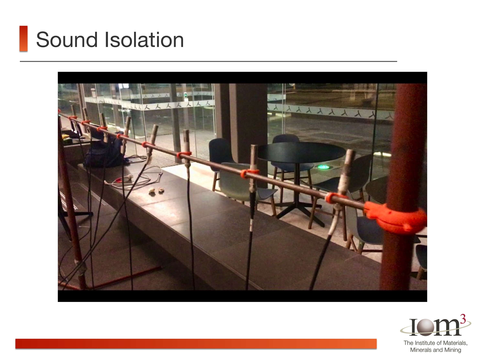"So we built a beam array. Here you can see our beam array that we built using 8 microphones that we 'borrowed' from the uni."
This photograph helps to assure the audience that there is nothing overly complicated about this. It is just simply a row of microphones. 6
Slide No. 17
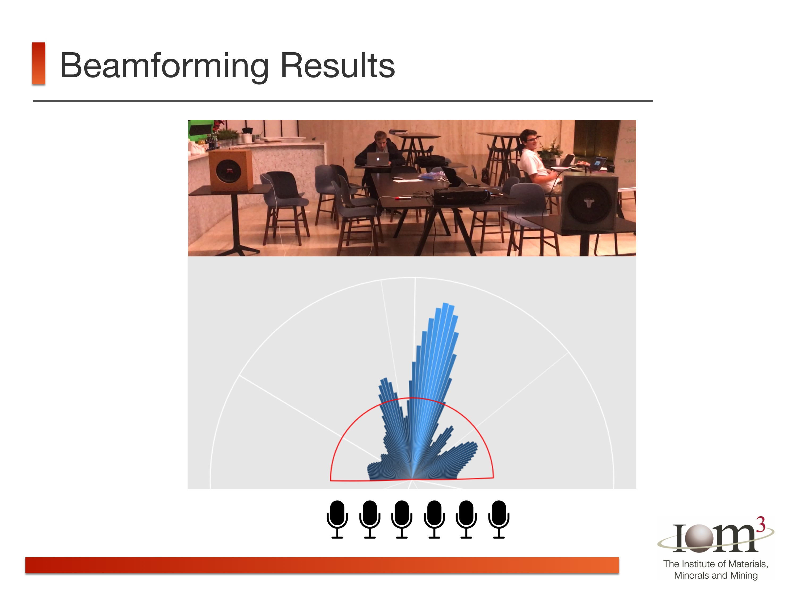"We played the sound clips from the fans from the two speakers, and you can see from our results that the beam array was successfully able to detect and locate the sound sources."
This visual works well to both show the results and how the experiments were performed at the same time.
Slide No. 18
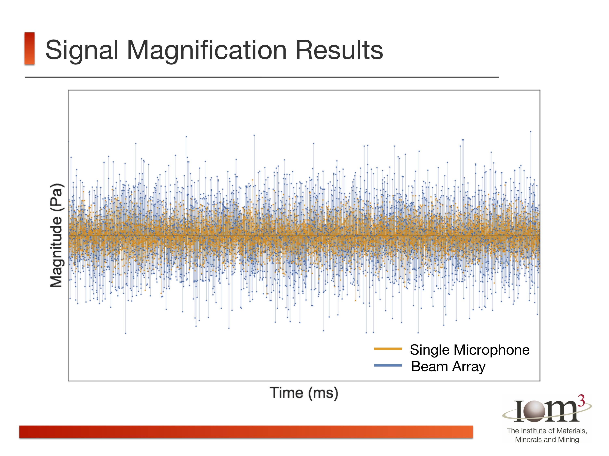"Here we have the results from the signal amplification. Our beam array achieved about a 2x sound magnification when compared to using a single microphone. So now we have our amplified sound signal, we then do the Fourier Transform."
Slide No. 19
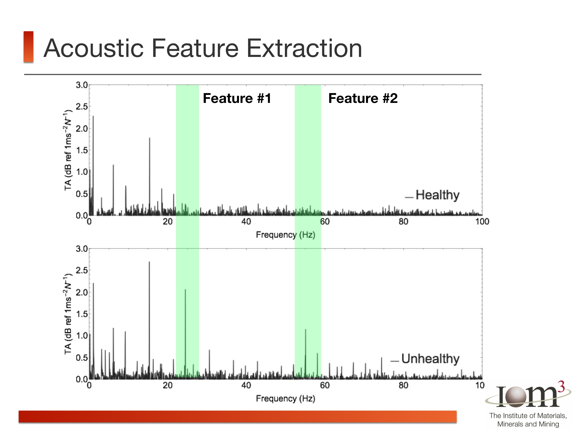"We are now in the frequency domain and straight away we can start to see some differences between the two signals right? It is time to pick out our acoustic features. So the frequency band at about 25 Hertz would make a good acoustic feature and so would 55 Hertz. So we went through and picked out a bunch of these acoustic features and then we used them as inputs to train a neural network predictive model."
I am still using signposting in my explanation the second time around, which helps add to the reinforced learning effect.
Slide No. 20
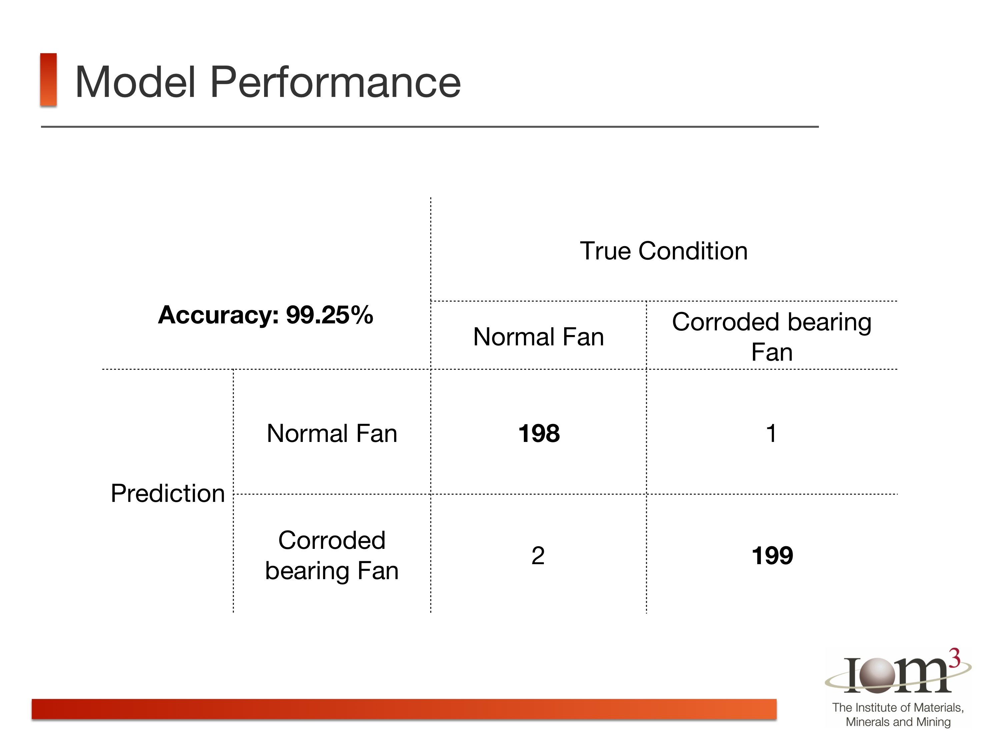"Our predictive model was able to classify the fan sound as healthy or unhealthy with a 99.25% accuracy. Out of 400 samples of sound clips, it classified 397 of them correctly."
Always use some impressive numbers if you have them. If you do not have them, learn to frame them so that they sound more impressive. For example, "0.1% of Australian's will suffer from disease X each year", sounds less frightening than "Every year 25 Thousand Australian's suffer from disease X". This is called the framing effect.
Slide No. 21
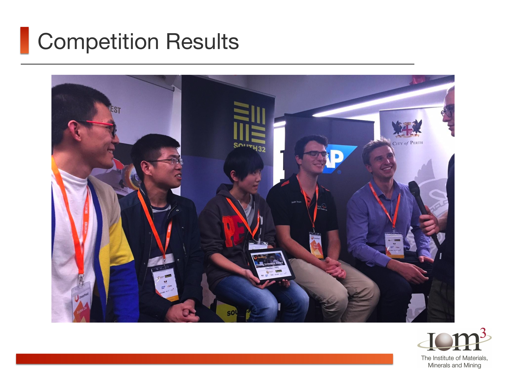"We ended up taking home the young innovators award and we very smartly decided to invest the prize money - no we didn't, we spent it all on pizza and beer and we have nothing left to show for it. What we did get though, is an offer to visit Woodside’s oil and gas plant to look for opportunities to deploy this type of technology, which is pretty awesome."
This was the last joke in my presentation before adopting a slower, more serious tone to deliver my final message.
"You know, over the weekend we had a lot of discussions with the engineers from different sectors and different companies and they all agreed that they feel that that acoustics is under utilised in the resource industry - which is why they chose that topic as the challenge. Yes, typical trending methods are used; temperatures, vibrations and pressures... However, acoustic monitoring has one clear advantage over all of these, which is that it does not require direct contact with the equipment being monitored. What is taking off in in Western Australia right now, is the use of robotics and drones on site. Woodside now even has a partnership with NASA. The robots and drones are being armed with different types of sensors and mechanisms to be able survey operations and perform tasks on site. Acoustics, could be just one of the tools in the arsenal that can be used to monitor equipment health on site."
Throughout the presentation I have showed the power of using acoustics for monitoring equipment health, now it is time to discuss the big picture. Here I am trying to deliver one key message - that acoustic condition monitoring has an untapped potential within the resource industry. I refer to my conversations with the engineers at the competition to show the audience that this is not just my own personal opinion, it is one that is shared amongst the industry. I then provide a moonshot example of the potential future of acoustic condition monitoring with mobile robots and drones. However, I make this idea more compelling by talking about what is happening in the robotics field right now.
Slide No. 22

"Sound tells stories, my favourite saying. There is a wealth of information contained within sound which can be utilised to diagnose the condition of functioning equipment. Today I explained how the combination of beam forming, signal processing and predictive modelling allow the monitoring of equipment health in noisy environments, such as a mine site or an oil and gas plant. I showcased two examples, the RailBam application which has been implemented by Rio Tinto, and the prototype solution that we proposed to use at Woodside. I then discussed the untapped potential for using acoustics, but that recently, the interest from these resource companies is increasing."
During a conclusion, you do not just want the audience to remember, you want them to reminisce. I start with 'sound tells stories, my favourite saying', just as I said at the start of my presentation. This will likely be a part of the presentation that they can recall, so I use it as a mental bookmark to jog the audience's memory back to the start of the presentation. Then, I tell them what I told them.
"And so if there is one thing i could leave you with today, it is that acoustic based condition monitoring has a truly, sound future."
Okay this was my last joke, but to be fair it is a pun so it doesn't really count because it isn't that funny, but it is actually really important. See, as humans, we do not have a very good way of remembering experiences. Our brains overweight two aspects of an experience; the peak and the ending. 7 By ending my presentation on this pun, the entire judging panel was left smiling. This will have a significant psychological impact, whether they realise it or not, on the way they will remember my presentation due to the peak-end rule.
Slide No. 23
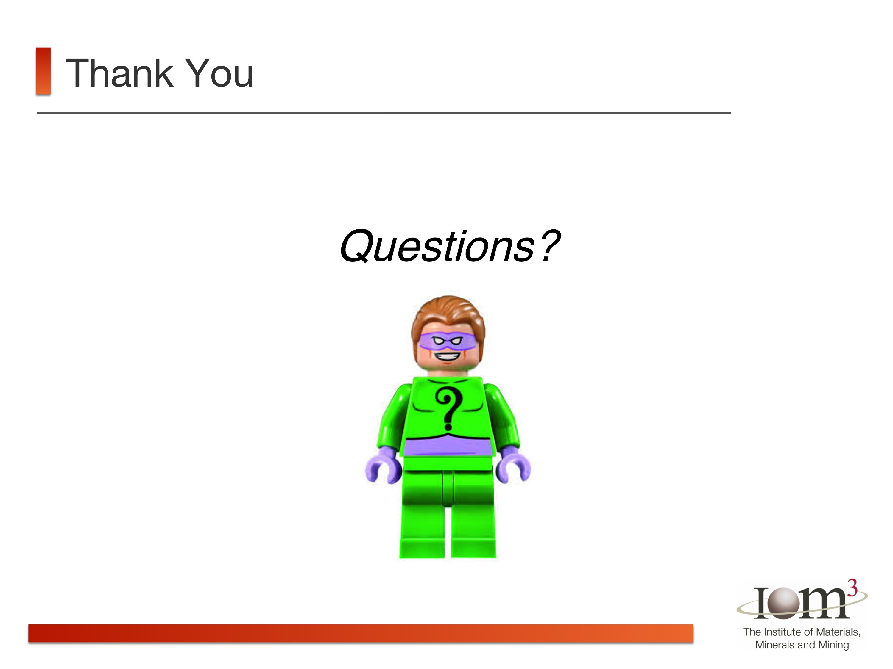Here I just stand and wait, there is no need to inform your audience that they are allowed to ask questions now, they already know. Standing in silence is a show of quiet confidence, which is the best kind of confidence when you do not want to come off as arrogant.
Once the questioning has started I transition to the following slide.
Slide No. 24
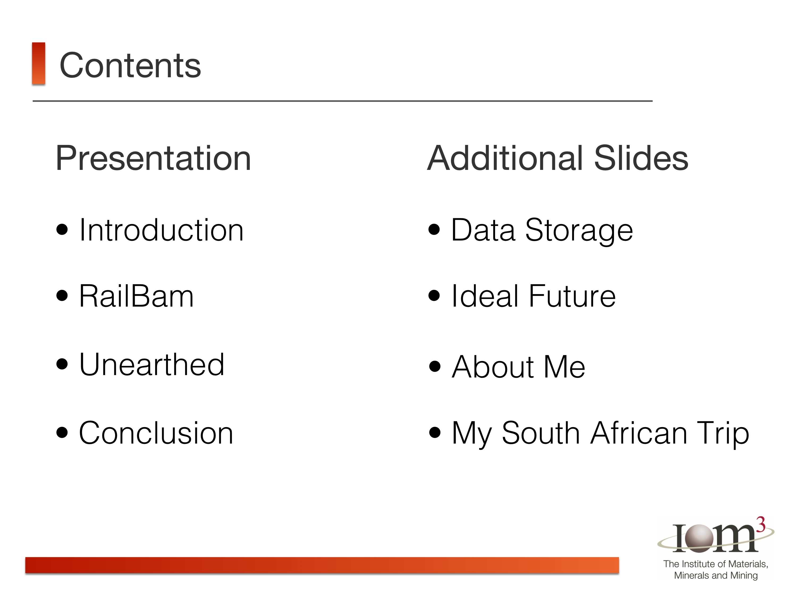Now there are two things to say about this slide. The first, is that the presentation contents on the left side of the slide are all hyperlinks which lead to various points within my presentation when clicked. So, when a question is asked that requires going back through your slidedeck, I will look far more prepared and organised. This is just another point that will be tallied in the audience's eyes - and the judging panel in my case. Nothing is worse than waiting for somebody to click back through 10 slides while they are asking 'wait, was it this one you mean?'.
The second, is the additional slides on the right. I have done this to influence and make suggestions to the audience on the questions they should ask, questions which I am perfectly prepared for. Now, it is worth noting that this did not actually work for me this time - the judges did not fall for my jedi mind tricks - but it has worked in the past and is always worth a shot.
When it comes to answering questions, keep it simple and do not try to answer questions if you are not sure. You want to play defensive, you are playing to keep the lead. You have done an awesome presentation, now it is just about not screwing it up. If a question comes your way that you can further impress them, then great. If it doesn't, no problem. What I will say is that you should have weeded out any potential holes or flaws in your presentation by critiquing it yourself, practicing with other people and by laying in bed all night pondering what questions could come up. Prepare for as many possible angles as you can.
"I would like to thank IOM3 for hosting the Young Persons’ Lecture Competition, CBMM for its generous sponsorship and all of you for listening."
I always like to save the acknowledgements for last, it is a nice way to exit the stage. If you do them too early, then once the questioning is done you either have to repeat yourself and say thanks again, or just sort of leave the stage without a good sign off. Nobody wants that.
Competition Results
I was able to win the national round, scoring the trip to South Africa to represent Australia in the world finals. I was then able to go on to win the international final, becoming the first Australian to ever win the competition.
Entering the Young Persons’ Lecture Competition has had a huge positive impact on me. It motivated me to improve at something that I love, which is public speaking. I joined Rostrum with the goal of winning the international final, but I will definitely be staying as I have realised how much there is still to learn. During my trip to South Africa I met some amazing people and made some good friends. Most importantly though, I was able to shock myself with what is possible with hard work and dedication.
When I first saw the email I could have quite easily have never given it a second thought. Opportunities come and go, at times there may be obstacles or they might not seem like a perfect fit for you. But at the end of the day you have two choices, to let that opportunity pass by, or to just go for it.
Summary Tips
Here is my presentation quick tips.
- Know your audience - Write your content and plan your presentation with your target audience in mind.
- Keep your slides simple - Minimise the amount of words on your slides as much as possible. Use animations sparingly. Consider applying a theme to the presentation.
- Before your speech - Tell yourself you are excited, smile and take deep breaths.
- 30 Second Rule - Know the first 30 seconds of your speech like the back of your hand.
- Start with an attention grabber - Avoid textbook introductions, they are boring, just like textbooks. People lose focus quickly so open with a story, ask the audience a thought provoking question or hit them with a confronting fact.
- Tell the audience about yourself - Sharing details about yourself in an about me section will humanise you and start to develop a connection with your audience.
- Using humour - Know your audience and use humour naturally, do not force it. Choose the appropriate times, early in a presentation is usually a good place for humour.
- Use 'we', not 'me' and 'you' - Using words such as 'we' and 'us' help to build the connection with your audience. The last thing you want to do - unless you are CEO or other big wig - is create separation between yourself and your audience.
- Have a story - We all like stories. Giving your presentation a narrative will keep people focused and entertained.
- Display the emotions you want your audience to feel - If you want your audience to be excited, then be excited yourself.
- Interact with your audience - Ask questions and think of out-of-the-box ways to deliver key messages.
- Use signposting - Signposting will help the audience maintain focus as well as helping you remember your content.
- Make your presentation flow - Put in the time to make sure your content flows from slide to slide. A good presentation flow will keep your audience encapsulated.
- Use analogies - Analogies are a great way to explain concepts and can also work well to add points of humour or show your understanding of your audience.
- Use the framing effect - Use the framing effect for the presentation of statistics and results to get your desired impact.
- Know when to be serious - Enhance the impact of your key messages by knowing when to be serious.
- Remember the peak-end rule - People overvalue the peak and the end of an experience when remembering it. Use this to your advantage by ensuring you have a strong finish to your presentation.
- Answering questions - Keep your answers short and sweet, do not pretend to know what you do not and use additional slides to influence which questions you get asked.
- Thanking the audience and acknowledgements - Thank your audience and make your acknowledgements right before you exit the stage.
Remember, no matter what you are presenting or speaking about, you are there to inform, persuade and entertain. 8

About IOM3
The Institute of Materials, Minerals and Mining (IOM3) is a major UK engineering institution whose activities encompass the whole materials cycle, from exploration and extraction, through characterisation, processing, forming, finishing and application, to product recycling and land reuse. It exists to promote and develop all aspects of materials science and engineering, geology, mining and associated technologies, mineral and petroleum engineering and extraction metallurgy, as a leading authority in the worldwide materials and mining community.